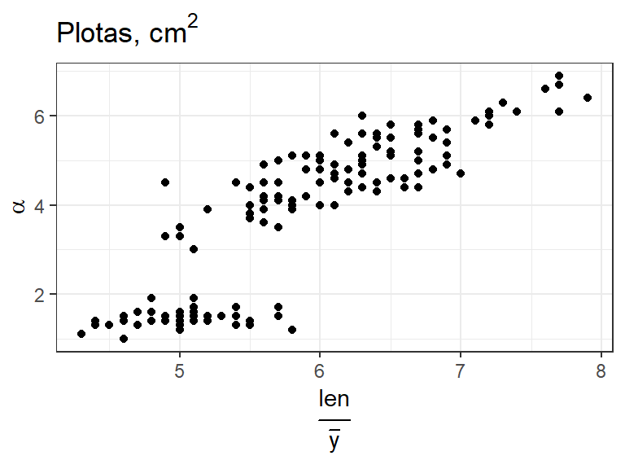
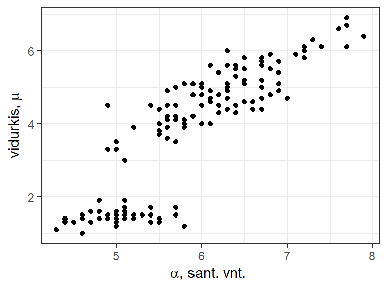
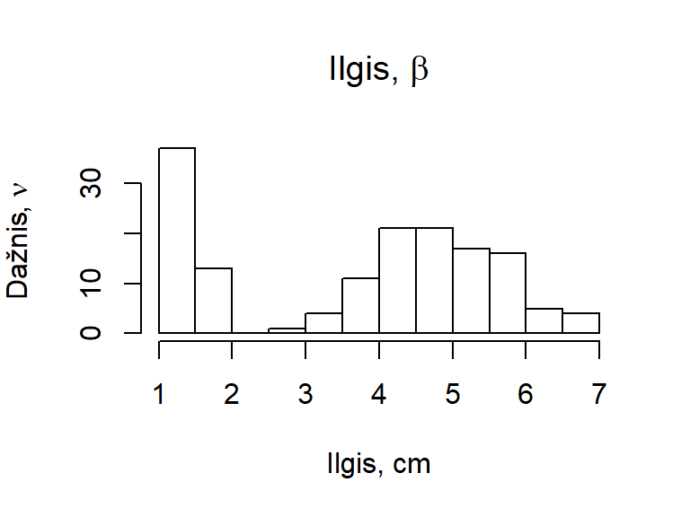
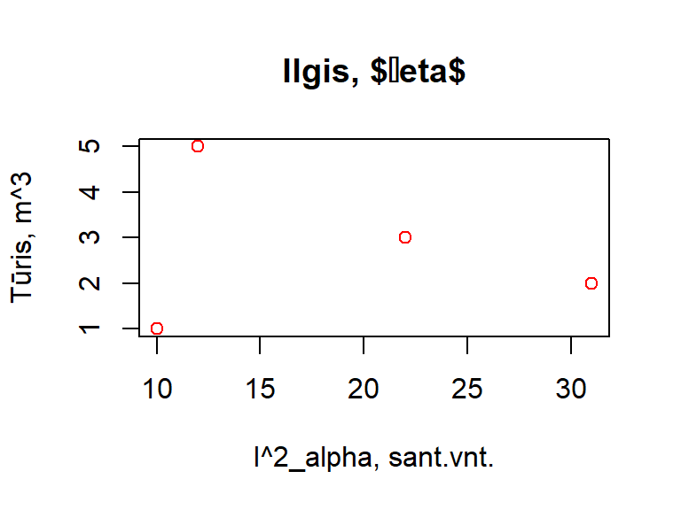
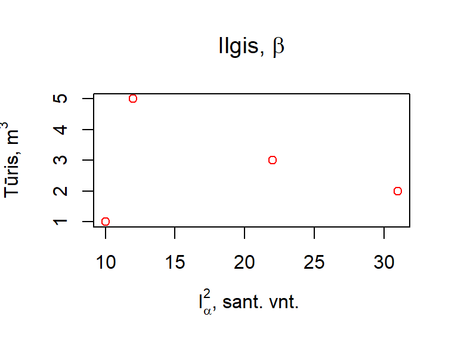

6. Ataskaitų rengimas
6.1 „R Markdown“ dokumentai
Patogus ir ganėtinai paprastas būdas kurti R analizės ataskaitas – naudoti R papildinį R Markdown.
R Markdown yra įrankis, kurio galimybės neapsiriboja vien ataskaitų kūrimu – juo galima sudaryti daugelio kitų tipų dokumentus: internetines svetaines, straipsnius, knygas. Mokslines publikacijas spausdinančios organizacijos, tokios kaip „American Chemical Society“ bei „Elsevier“ turi specialiai jų straipsniams skirtus R Markdown šablonus. Naudodami R Markdown taip pat galite rašyti ir savo kursinį ar baigiamąjį darbą.
Papildinys turi jam skirtą tinklapį (http://rmarkdown.rstudio.com), kuriame pateikiama mokomoji medžiaga bei gausybė R Markdown dokumentų pavyzdžių.
6.1.1 R Markdown dokumento atidarymas
Vienas iš būdų atidaryti naują R Markdown dokumentą – naudotis RStudio meniu:
- RStudio meniu → File → New file → R Markdown…
Pastaba: „File“ meniu (kuris yra viršuje kairėje) nemaišykite su „Files“ langu. Kitas būdas parodytas pav. 6.1.

Pav. 6.1: R Markdown dokumento atvėrimas.
6.1.2 R Markdown dokumento struktūra
R Markdown dokumentus sudaro 3 pagrindinės dalys (pav. 6.2):
- Antraštė su technine informacija YAML formatu;
- Tekstas, parašytas natūralia žmonių kalba, pvz., lietuviškai, su R Markdown elementais;
- R programos kodo blokai, kuriuose vykdoma analizė.
Pav. 6.2: Pagrindinės R Markdown dokumento dalys. Pavyzdyje rodoma dokumento versija, atidaryta per RStudio.
Parsisiųskite R Markdown atmintinę (nuoroda ) ir išnagrinėkite virš lentelių esančią medžiagą „.Rmd files“, „Reproducible Research“ ir „Dynamic Documents“ bei schemas-lenteles „.Rmd structure“ bei „Workflow“.
R Markdown dokumentai – tai tekstinės bylos, kurių įprastinis plėtinys yra .Rmd arba .rmd.
6.1.3 Ataskaitų generavimas
Ataskaitos sugeneruojamos paspaudus „Knit“ mygtuką. Paspaudę trikampėlį prie šio mygtuko (pav. 6.3) galime pasirinkti vieną iš kelių dažniausiai naudojamų ataskaitos formatų. Tinklapio (HTML) formatui jokių papildomų priedų nereikia. Word formatui reikia programos Pandoc, kuri yra įdiegiama su RStudio. PDF formatui reikia Pandoc ir LaTeX (skaitoma la-tek) sistemos, kuri turėtų būti įdiegta atskirai (mūsų pratyboms ji nėra reikalinga).
![*R Markdown* dokumento (kairėje) ir juo sugeneruotos *HTML* formato ataskaitos (dešinėje) pavyzdys. Paspaudę „Knit“ mygtuką sugeneruosite ataskaitą, kuri atsiras arba „Viewer“, arba atskirame lange. Vėliau paspaudę „Open in Browser“ mygtuką, galėsite ataskaitą persikelti į interneto naršyklės langą. Paspaudę trikampį šalia „Knit“ mygtuko, galėsite pasirinkti vieną ir dažniausiai naudojamų ataskaitos formatų. Eilutės Nr. 14 pabaigoje padėti 4 tarpai (kiekvienas vos įžiūrimas taškiukas simbolizuoja tarpą). Dėl jų -- ketvirtasis sakinys yra naujoje pastraipoje.](fig/pic/06-R-Markdown-pavyzdys-1.png)
Pav. 6.3: R Markdown dokumento (kairėje) ir juo sugeneruotos HTML formato ataskaitos (dešinėje) pavyzdys. Paspaudę „Knit“ mygtuką sugeneruosite ataskaitą, kuri atsiras arba „Viewer“, arba atskirame lange. Vėliau paspaudę „Open in Browser“ mygtuką, galėsite ataskaitą persikelti į interneto naršyklės langą. Paspaudę trikampį šalia „Knit“ mygtuko, galėsite pasirinkti vieną ir dažniausiai naudojamų ataskaitos formatų. Eilutės Nr. 14 pabaigoje padėti 4 tarpai (kiekvienas vos įžiūrimas taškiukas simbolizuoja tarpą). Dėl jų – ketvirtasis sakinys yra naujoje pastraipoje.
6.1.4 R Markdown sintaksė
Programavimo kalbos sintaksė – tai tam tikros taisyklės ir reikalavimai, kuriuos turi tenkinti ta kalba. R Markdown sintaksę sudaro specialieji simboliai, rašomi „žmonių kalbai“ skirtoje dokumento dalyje. Sugeneravus ataskaitą, joje interpretuojami kaip tam tikras formatavimo būdas (pajuodintas tekstas, pasviręs tekstas, antraštė, nuoroda, sąrašas, lentelė ir t.t. Pvz., pav. 6.3).
Tam, kad geriau suprastumėte, kas tie specialieji simboliai ir kaip jie vartojami bei interpretuojami, parsisiųskite R Markdown sintaksės gidą (nuoroda ) ir išnagrinėkite medžiagą, esančią 1 puslapyje ir 2 puslapio pradžioje (iki „Chunk Options“). Be abejo verta paminėti, kad RStudio pagalbos sistemoje („Help“ kortelėje, pav. 6.4) pateikti svarbiausi R Markdown raktažodžiai.
Pav. 6.4: Pagrindinius R Markdown sintaksės elementus galite rasti naudodamiesi RStudio: meniu juostoje pasirinkę „Help“ –> „Markdown Quick Reference“. „Help“ lange paspaudę raudonai pažymėtą ikoną pasididinsite aprašymo langą.
Atkreipsiu dėmesį tik į keletą neakivaizdžių dalykų:
- Jei norite, kad tekstas ataskaitoje būtų parašytas iš naujos eilutės, eilutės pabaigoje turėtumėte padėti bent 2 tarpus. Kitu atveju net iš naujos eilutės parašytas tekstas bus interpretuojamas kaip ta pati pastraipa.
- Prieš naują antraštės pavadinimą, kuris prasideda eilutės pradžioje be tarpo padėjus grotelių (#) simbolį, palikite tuščią eilutę.
- Analogiškai, prieš naują sąrašą, brūkšnį (***) ir daugelį kitų iš naujos eilutės rašomų raktažodžių reikia palikti tuščią eilutę.
Ir į vieną akivaizdų:
- Vaizdumo dėlei programa RStudio raktažodžiais pažymėtas dokumento vietas (įprastai) nudažo kita spalva (pvz., pav. 6.2).
Plačiau apie R Markdown dokumentus skaitykite tinklapyje:
6.1.5 Paketas addins.rmd ir RStudio įskiepiai
RStudio galimybes galima praplėsti papildiniais, vadinamais įskiepiais (angl. add-ins). Pakete addins.rmd yra įskiepių, skirtų mokytis R Markdown sintaksę. Paketą, turintį įskiepių, tereikia reikia įsidiegti, bet užkrauti nebūtina. Įdiegus, RStudio „Addins“ meniu atsiranda reikiami įskiepiai (pav. 6.5).
Pav. 6.5: RStudio įskiepiai iš paketo addins.rmd. Jei įdiegtas reikiamas paketas, įskiepiai pasiekiami per „Addins“ meniu.
Kiekvienam iš įskiepų galima sukurti greitųjų klavišų kombinaciją. Tai, kaip atidaryti reikiamą meniu, parodyta pav. 6.6.
Pav. 6.6: Greitųjų RStudio klavišų nustatymo/keitimo meniu atidarymas.
Toliau bus pateikiama pavyzdžių, kaip naudoti addins.rmd paketo įskiepius (pav. 6.7, 6.8, 6.9, 6.10)

Pav. 6.7: Pavyzdys, kaip naudoti paketo addins.rmd RStudio įskiepius. Teksto formatavimas R Markdown sintaksės elementais.

Pav. 6.8: Paketo addins.rmd RStudio įskiepiai, skirti sukurti antraščių pavadinimus (pirmasis būdas).

Pav. 6.9: Paketo addins.rmd RStudio įskiepiai, skirti sukurti antraščių pavadinimus (antrasis būdas).

Pav. 6.10: Paketo addins.rmd RStudio įskiepiai sąrašams sudaryti. Iš pradžių sukuriamas pirmo lygio sąrašas, po to – antro. Pirmo sąrašo lygio elementai pavyzdyje ženklinami skaičiais, antro lygio – mažosiomis raidėmis.
Virš daugelio R Markdown elementų, tokių kaip sąrašai, antraštės, lentelės, būtina palikti vieną tuščią eilutę. Paketo addins.rmd RStudio įskiepiai įprastai tai padaro.
Paketo addins.rmd įskiepiai, kurių pavadinime parašyta „(example)“ tiesiog įterpia tam tikro elemento (pvz., lentelės) pavyzdį, bet realaus teksto formatavimo neatlieka.
6.1.6 Programos kodo blokai
Programos kodas turi būti rašomas specialiuose blokuose (angl. chunks) kurie įterpiami paspaudus Ctrl + Alt + I arba „Insert“ mygtuką ir pasirinkus „R“ bloką.
Rašant programos kodą galioja ta pati seka, aprašyta 5.1.3 skyriuje:
Analizės kodo dalys eilės tvarka:
- Paketų užkrovimas;
- Nustatymai;
- Duomenų įkėlimas;
- Visa kita.
6.1.7 Funkcija pander
Funkcija pander() yra paketo pander dalis. Ji skirta gražesniam rezultatų pateikimui ataskaitose. Funkcijai skirtas tinklapis http://rapporter.github.io/pander/
library(pander) # funkcijai panderlibrary(magrittr) # operatoriui %>% Daugumą statistinės analizės funkcijų rezultatų galima atspausdinti naudojant komandą pander ir taip gauti gražiau suformatuotas lenteles.
Palyginkime įprastu būdu atspausdintus rezultatus:
summary(iris)
## Sepal.Length Sepal.Width Petal.Length Petal.Width
## Min. :4.300 Min. :2.000 Min. :1.000 Min. :0.100
## 1st Qu.:5.100 1st Qu.:2.800 1st Qu.:1.600 1st Qu.:0.300
## Median :5.800 Median :3.000 Median :4.350 Median :1.300
## Mean :5.843 Mean :3.057 Mean :3.758 Mean :1.199
## 3rd Qu.:6.400 3rd Qu.:3.300 3rd Qu.:5.100 3rd Qu.:1.800
## Max. :7.900 Max. :4.400 Max. :6.900 Max. :2.500
## Species
## setosa :50
## versicolor:50
## virginica :50
##
##
##
…su rezultatais, atspausdintais naudojant pander:
summary(iris) %>% pander()| Sepal.Length | Sepal.Width | Petal.Length | Petal.Width | Species |
|---|---|---|---|---|
| Min. :4.300 | Min. :2.000 | Min. :1.000 | Min. :0.100 | setosa :50 |
| 1st Qu.:5.100 | 1st Qu.:2.800 | 1st Qu.:1.600 | 1st Qu.:0.300 | versicolor:50 |
| Median :5.800 | Median :3.000 | Median :4.350 | Median :1.300 | virginica :50 |
| Mean :5.843 | Mean :3.057 | Mean :3.758 | Mean :1.199 | NA |
| 3rd Qu.:6.400 | 3rd Qu.:3.300 | 3rd Qu.:5.100 | 3rd Qu.:1.800 | NA |
| Max. :7.900 | Max. :4.400 | Max. :6.900 | Max. :2.500 | NA |
Skirtumas akivaizdus. Toliau pateikdami papildomą parametrą missing = "", langelius su įrašu NA galime pasikeisti į tuščias eilutes:
summary(iris) %>% pander(missing = "")| Sepal.Length | Sepal.Width | Petal.Length | Petal.Width | Species |
|---|---|---|---|---|
| Min. :4.300 | Min. :2.000 | Min. :1.000 | Min. :0.100 | setosa :50 |
| 1st Qu.:5.100 | 1st Qu.:2.800 | 1st Qu.:1.600 | 1st Qu.:0.300 | versicolor:50 |
| Median :5.800 | Median :3.000 | Median :4.350 | Median :1.300 | virginica :50 |
| Mean :5.843 | Mean :3.057 | Mean :3.758 | Mean :1.199 | |
| 3rd Qu.:6.400 | 3rd Qu.:3.300 | 3rd Qu.:5.100 | 3rd Qu.:1.800 | |
| Max. :7.900 | Max. :4.400 | Max. :6.900 | Max. :2.500 |
Arba tiesiog koreguokime bendruosius paketo pander nustatymus, kad visose funkcija pander() atspausdintose lentelėse langeliai su įrašu NA būtų keičiami į tuščias eilutes:
panderOptions("missing", "")Įdėkime lentelės aprašymą (angl. caption):
summary(iris) %>%
pander(caption = "Duomenų lentelės „iris“ suvestinė, atspausdinta naudojant „pander“.")| Sepal.Length | Sepal.Width | Petal.Length | Petal.Width | Species |
|---|---|---|---|---|
| Min. :4.300 | Min. :2.000 | Min. :1.000 | Min. :0.100 | setosa :50 |
| 1st Qu.:5.100 | 1st Qu.:2.800 | 1st Qu.:1.600 | 1st Qu.:0.300 | versicolor:50 |
| Median :5.800 | Median :3.000 | Median :4.350 | Median :1.300 | virginica :50 |
| Mean :5.843 | Mean :3.057 | Mean :3.758 | Mean :1.199 | |
| 3rd Qu.:6.400 | 3rd Qu.:3.300 | 3rd Qu.:5.100 | 3rd Qu.:1.800 | |
| Max. :7.900 | Max. :4.400 | Max. :6.900 | Max. :2.500 |
summary(iris) %>%
pander(caption = "Duomenų lentelės „iris“ suvestinė, atspausdinta naudojant „pander“.")| Sepal.Length | Sepal.Width | Petal.Length | Petal.Width | Species |
|---|---|---|---|---|
| Min. :4.300 | Min. :2.000 | Min. :1.000 | Min. :0.100 | setosa :50 |
| 1st Qu.:5.100 | 1st Qu.:2.800 | 1st Qu.:1.600 | 1st Qu.:0.300 | versicolor:50 |
| Median :5.800 | Median :3.000 | Median :4.350 | Median :1.300 | virginica :50 |
| Mean :5.843 | Mean :3.057 | Mean :3.758 | Mean :1.199 | |
| 3rd Qu.:6.400 | 3rd Qu.:3.300 | 3rd Qu.:5.100 | 3rd Qu.:1.800 | |
| Max. :7.900 | Max. :4.400 | Max. :6.900 | Max. :2.500 |
Užduotis 6.3
- Naudodami funkciją pander atspausdinkite duomenų lentelę BOD.
- Naudodami funkcijas pander ir tail atspausdinkite 4 paskutines duomenų lentelės iris eilutes.
- Naudodami funkciją table sudarykite kintamųjų N ir P iš duomenų rinkinio npk porinę dažnių lentelę. Ją atspausdinkite naudodami funkciją pander. Atspausdintos lentelės aprašymas turėtų būti „Porinė dažnių lentelė“.
6.2 Užrašų knygutės režimas
Pamoka apie R užrašų knygutės režimu („R Notebooks“):
6.3 TeX / LaTeX lygtys
Rašant mokslinius dokumentus neretai reikalingos lygtys. Paprasčiausias pavyzdys – kai reikia užrašyti kvadratinius centimetrus (\(cm^2\)). Tam pravarti TeX / LaTeX lygčių rašymo sistema, kuri yra integruota į RStudio R Markdown („.Rmd“) dokumentus.
LaTeX lygtys R Markdown byloje rašomos tarp viengubų dolerio ($ $) ar dvigubų dolerio ($$ $$) ženklų.
Pavyzdžiui užrašas $y = 2 \times \alpha^2$ virs \(y = 2 \times \alpha^2\), o analogiškas užrašas tarp dvigubų dolerio ženklų bus parašytas atskiroje eilutėje:
\[y = 2 \times \alpha^2\]
6.3.1 LaTeX lygtys R Markdown bylose
Rašant LaTeX lygtis verta prisiminti:
- $ – lygties (esančios eilutėje su tekstu) pradžios ir pabaigos simbolis;
- $$ – lygties (esančios atskiroje eilutėje) pradžios ir pabaigos simbolis;
- Simbolis _ – apatinio indekso pradžia;
- Simbolis ^ – viršutinio indekso pradžia;
- Simboliai {} – grupavimo operatorius;
- Simbolis \ – LaTeX raktažodžio pradžia.
Svarbiausi šiam kursui lygčių rašymo raktažodžiai pateikiami 6.1 lentelėje, kiti naudingi raktažodžiai 6.2, 6.3 , 6.4 ir 6.5 lentelėse.
| Pavadinimas | Simbolis ar raktažodis | Pavyzdys | Rezultatas |
|---|---|---|---|
| Viršutinis indeksas (vienam simboliui) | ^ | x^2 | \(x^2\) |
| Apatinis indeksas (vienam simboliui) | _ | x_2 | \(x_2\) |
| Viršutinis indeksas (simbolių grupei) | ^{ } | x^{222} | \(x^{222}\) |
| Apatinis indeksas (simbolių grupei) | _{ } | x_{222} | \(x_{222}\) |
| Trupmena | \frac{}{} | \frac{skaitiklis}{vardiklis} | \(\frac{skaitiklis}{vardiklis}\) |
| Daugybos ženklas | \times | U = \alpha \times A | \(U = \alpha \times A\) |
| Procentai | \% | 10\% | \(10\%\) |
| Brūkšnelis virš simbolio | \bar{} | \bar{x}, \bar{A} | \(\bar{x}, \bar{A}\) |
| Didžiosios lotyniškos raidės | \Sigma, \Delta | \Sigma + \Delta ^ \Theta | \(\Sigma + \Delta ^ \Theta\) |
| Mažosios lotyniškos raidės | \alpha, \beta, \sigma, \mu, \lambda | \alpha \beta - \sigma^2 \mu | \(\alpha \beta - \sigma^2\mu\) |
| Įprasti skliausteliai | ( ) | ( \frac{A}{X} )^3 | \(( \frac{A}{X} )^3\) |
| Dideli skliausteliai | \left( \right) | \left( \frac{A}{X} \right)^3 | \(\left( \frac{A}{X} \right)^3\) |
| \left[ \right] | \left[ \frac{A}{X} \right]^3 | \(\left[ \frac{A}{X} \right]^3\) | |
| \left< \right> | \left< \frac{A}{X} \right>^3 | \(\left< \frac{A}{X} \right>^3\) | |
| Tarapas | ~ | a b~c~~d | \(a b~c~~d\) |
Užduotis 6.5
- R Markdown dokumente („.Rmd“), atidarytame per RStudio, užrašykite visas LaTeX lygtis, pateiktas 6.1 lentelės stulpelyje „Pavyzdys“. Tam lygtis tereikia įterpti tarp dvigubų dolerio simbolių \(\$\$...\$\$\) (vietoje daugtaškio) „žmonių kalbai“ skirtoje R Markdown dokumento dalyje;
- R Markdown dokumente („.Rmd“) užrašykite šias LaTeX lygtis:
- \(f = 40\%\)
- \(A^{2x}_{CD}\)
- \(c = \frac{A}{B}\)
- \(\frac{x^2}{y^3}\)
- \(\mu = \bar{A} \times \Theta^\alpha\)
- \(\left( \frac{x^2}{y^3} + \mu \right)_{pirmasis}\)
- \(\left( \frac{X}{Y} \right)^2\)
- \(\lambda = \alpha \frac{\beta \sigma^2}{\mu}\)
| Simbolis | Raktažodis | Pavyzdys | Rezultatas |
|---|---|---|---|
| Daugybos ženklas \(\times\) | \times | X \times a | \(X \times z\) |
| Procentai \(\%\) | \% | 10\% | \(10\%\) |
| Simbolis apytiksliai \(\approx\) | \approx | X \approx a | \(X \approx a\) |
| Bangelė \(\sim\) | \sim | X \sim a | \(X \sim a\) |
| Laipsnių ženklas \(^\circ\) | ^\circ | 10^\circ | \(10^\circ\) |
| Daugiau lygu \(\geq\) | \geq | X \geq a | \(X \geq a\) |
| Mažiau lygu \(\leq\) | \leq | X \leq a | \(X \leq a\) |
| Nelygu \(\neq\) | \neq | X \neq a | \(X \neq a\) |
| Dalinės išvestinės ženklas \(\partial\) | \partial | \partial X | \(\partial X\) |
| Plius minus \(\pm\) | \pm | \pm a | \(\pm a\) |
| Minus plius \(\mp\) | \mp | \mp a | \(\mp a\) |
| Begalybė \(\infty\) | \infty | \infty | \(\infty\) |
| Rodyklė į kairę \(\leftarrow\) | \leftarrow | X \leftarrow a | \(X \leftarrow a\) |
| Rodyklė į dešinę \(\rightarrow\) | \rightarrow | X \rightarrow 0 | \(X \rightarrow 0\) |
| Rodyklė į dešinę \(\to\) | \to | X \to \infty | \(X \to \infty\) |
| Tarapas | ~ \, \; \ | a b~c\ d\,e\;f~~g | \(a b~c\ d\,e\;f~~g\) |
| Nauja eilutė | \\ | a \\ d | (nerodoma) |
| Pavadinimas | Raktažodis | Pavyzdys | Rezultatas |
|---|---|---|---|
| Matematinis šriftas | \mathcal{} | \mathcal{R} | \(\mathcal{R}\) |
| \mathcal{N}(\mu,\sigma^2) | \(\mathcal{N}(\mu,\sigma^2)\) | ||
| \mathcal{P}(\lambda) | \(\mathcal{P}(\lambda)\) | ||
| \mathcal{B}(n, p) | \(\mathcal{B}(n, p)\) |
| Pavadinimas | Raktažodis | Pavyzdys | Rezultatas |
|---|---|---|---|
| Šaknis | \sqrt[]{} |
\sqrt[n]{x} | \(\sqrt[n]{x}\) |
| \sqrt{} | \sqrt{x} | \(\sqrt{x}\) | |
| Suma | \sum_{}^{} | \sum_{A}^{B} C_i | \(\sum_{A}^{B}C_i\) |
| \sum_{A} | \(\sum_{A}\) | ||
| \sum^{B} | \(\sum^{B}\) | ||
| \sum C_i | \(\sum C_i\) | ||
| Suma (patobulintai) | \sum \limits_{}^{} | \sum \limits_{A}^{B} C_i | \(\sum \limits_{A}^{B} C_i\) |
| Sandauga | \prod_{}^{} | \prod_{A}^{B} C_i | \(\prod_{A}^{B}C_i\) |
| Sandauga (patobulintai) | \prod \limits_{}^{} | \prod \limits_{A}^{B} C_i | \(\prod \limits_{A}^{B} C_i\) |
| Integralas | \int_{}^{} | \int_{A}^{B} dx | \(\int_{A}^{B} dx\) |
| Integralas (patobulintai) | \int \limits_{}^{} | \int \limits_{A}^{B} dx | \(\int \limits_{A}^{B} dx\) |
| Ribos | \lim_{} | \lim_{A} | \(\lim_{A}\) |
| \lim_{i \to \infty} x_i | \(\lim_{i \to \infty} x_i\) | ||
| Ribos (patobulinta) | \lim \limits_{} | \lim \limits_{i \to \infty} x_i | \(\lim\limits_{i \to \infty} x_i\) |
| Simbolis | Kodas | Simbolis | Kodas | Simbolis | Kodas | Simbolis | Kodas |
|---|---|---|---|---|---|---|---|
| \(\alpha\) | \alpha | \(\theta\) | \theta | \(\pi\) | \pi | \(\phi\) | \phi |
| \(\beta\) | \beta | \(\vartheta\) | \vartheta | \(\Pi\) | \Pi | \(\varphi\) | \varphi |
| \(\gamma\) | \gamma | \(\Theta\) | \Theta | \(\rho\) | \rho | \(\Phi\) | \Phi |
| \(\Gamma\) | \Gamma | \(\kappa\) | \kappa | \(\varrho\) | \varrho | \(\chi\) | \chi |
| \(\delta\) | \delta | \(\lambda\) | \lambda | \(\sigma\) | \sigma | \(\psi\) | \psi |
| \(\Delta\) | \Delta | \(\Lambda\) | \Lambda | \(\Sigma\) | \Sigma | \(\Psi\) | \Psi |
| \(\epsilon\) | \epsilon | \(\mu\) | \mu | \(\iota\) | \iota | \(\omega\) | \omega |
| \(\varepsilon\) | \varepsilon | \(\nu\) | \nu | \(\tau\) | \tau | \(\Omega\) | \Omega |
| \(\zeta\) | \zeta | \(\xi\) | \xi | \(\upsilon\) | \upsilon | ||
| \(\eta\) | \eta | \(\Xi\) | \Xi | \(\Upsilon\) | \Upsilon |
Užduotis 6.6 Įvertinkite, kuo skiriasi 6.4 lentelės pavyzdžiuose pateiktos lygtys, kai jas užrašome:
- eilutėje su tekstu (naudodami \(\$...\$\)) ir
- kaip atskirą lygčių bloką (naudodami \(\$\$...\$\$\)).
Daugiau informacijos apie LaTeX lygtis galite rasti šiame šaltinyje:
6.4 Lygtys grafikų antraštėse
Oficialus būdas užrašyti matematinius simbolius R grafikuose – tai plotmath išraiškos (daugiau sužinosite įrašę ?plotmath). Jos, deja, neįtrauktos į šį kursą, nes dažniausiai naudojamas metematines išraiškas (žiūrėti 6.4.1 skyriuje) galima užrašyti naudojant LaTeX lygčių sintaksę, nagrinėtą ankstesniuose skyriuose ir žinoti dar keturias taisykles.
LaTeX lygtį rašant R grafikų antraštėse reiktų žinoti dar 4 taisyklės:
- lygtis rašoma kabutėse,
- tarp dolerio simbolių $…$,
- reikalinga funkcija TeX() (iš paketo latex2exp),
- atgal pasvirę brūkšniai turi būti sudvigubinami (\\).
Paaiškinimas:
- Antraščių pavadinimai rašomi kabutėse – viengubose (pvz.,
'antraštė') arba dvigubose (pvz.,"antraštė"), nes tai yra tekstas; - Ta antraštės vieta, kuri turi būti užrašyta kaip lygtis, matematinis simbolis, graikiška raidė, viršutinis ar apatinis indeksas rašoma tarp viengubų dolerio simbolių (pvz.,
("tekstas, $lygtis_1$")) - Antraščių pavertimui į lygtį reikalinga funkcija
TeX(), esanti pakete latex2exp (pvz.,TeX("tekstas, $lygtis_1$")) - Visus atgal pasvirusius brūkšnius (\) reikia sudvigubinti (\\). Pvz.,
\alphaturi būti parašyta kaip\\alpha, o\times– kaip\\times.
# LaTeX lygčių naudojimui grafikuose
library(latex2exp)# Grafikas, braižomas ggplot2 sistema
library(ggplot2)
ggplot(iris, aes(x = Sepal.Length, y = Petal.Length)) +
geom_point() +
ggtitle(label = TeX("Plotas, $cm^2$")) + # ← LaTeX lygtis čia
labs(y = TeX("$\\alpha$"), # ← LaTeX lygtis čia
x = TeX("$\\frac{len}{\\bar{y}}$")) # ← LaTeX lygtis čia
ggplot(iris, aes(x = Sepal.Length, y = Petal.Length)) +
geom_point() +
xlab(TeX("$\\alpha$, sant. vnt.")) + # ← LaTeX lygtis čia
ylab(TeX("vidurkis, $\\mu$")) # ← LaTeX lygtis čia
hist(iris$Petal.Length,
main = TeX("Ilgis, $\\beta$"),
xlab = "Ilgis, cm",
ylab = TeX("Dažnis, $\\nu$")
) 
Užduotis 6.7
- Užsikraukite paketus latex2exp bei magrittr ir naudodamiesi programos kodo ruošiniu
TeX("$...$") %>% plot(), kuriame vietoje daugtaškio turėtų būti lygtis, ir LaTeX lygčių rašymo grafikų antraštėse taisyklėmis užrašykite šias lygtis:- lygtis, pateiktas 6.1 lentelės stulpelyje „Pavyzdys“, kaip darėte ankstesnėje užduotyje;
- \(A^{2x}_{CD}\)
- \(c = \frac{A}{B}\)
- \(\frac{x^2}{y^3}\)
- \(\mu = \bar{A} \times \Theta^\alpha\)
- \(\left( \frac{x^2}{y^3} + \mu \right)_{pirmasis}\)
- \(\left( \frac{X}{Y} \right)^2\)
- \(\lambda = \alpha \frac{\beta \sigma^2}{\mu}\)
- \(f = 40\%\)
Pvz., (i) punkto atsakymas turėtų būti:
TeX("$f = 40\\%$") %>% plot()
- Pagal LaTeX lygčių rašymo grafikuose taisykles pataisykite programos kodą, esantį žemiau, kad lygtys grafiko antraštėse būtų rodomos teisingai.
# Taisytinas kodas
library(latex2exp)
x <- c(10, 22, 12, 31)
y <- c(1, 3, 5, 2)
plot(x = x,
y = y,
main = "Ilgis, $\beta$", # ← taisyti čia
xlab = "I^2_alpha, sant.vnt.", # ← taisyti čia
ylab = "Tūris, m^3", # ← taisyti čia
col = "red"
) 
Norimas rezultatas:

6.4.1 Matematinės išraiškos, kurias palaiko paketas latex2exp
Šiame poskyryje pateikti lygčių ir simbolių pavyzdžiai, kuriuos palaiko paketas latex2exp (pav. 6.11).
Pav. 6.11: TeX / LaTeX simboliai ir komandos, kurias palaiko paketas latex2exp. Atspausdinta naudojant R komandą latex2exp_supported(plot = TRUE).
Daugiau „latex2exp“ palaikomų matematinių išraiškų ir lygčių pavyzdžių rasite suvedę komandą:
latex2exp::latex2exp_examples()